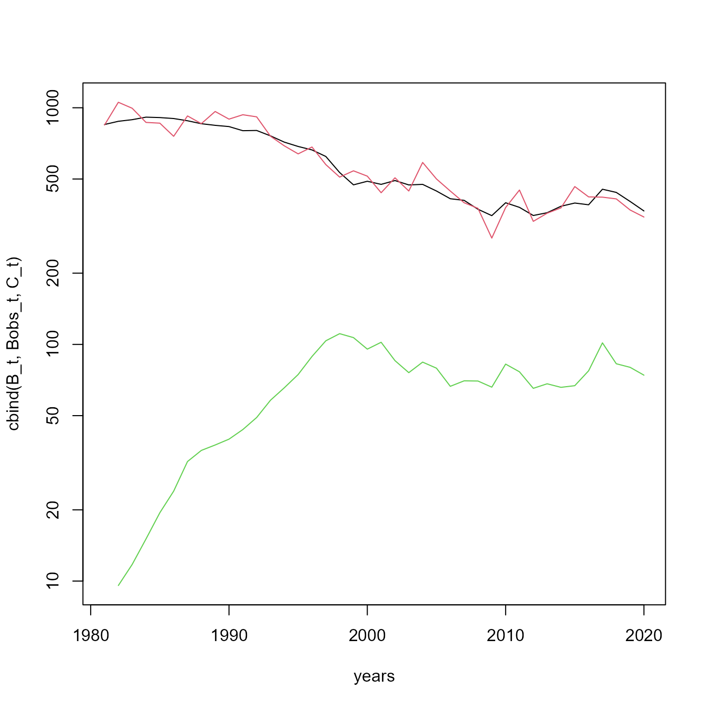
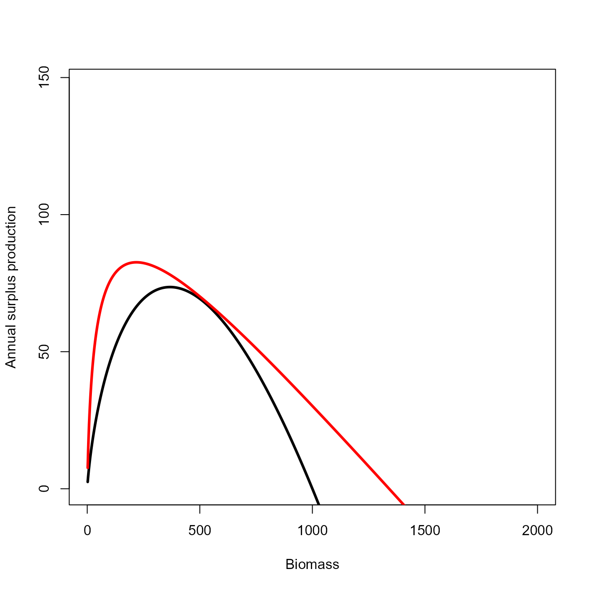
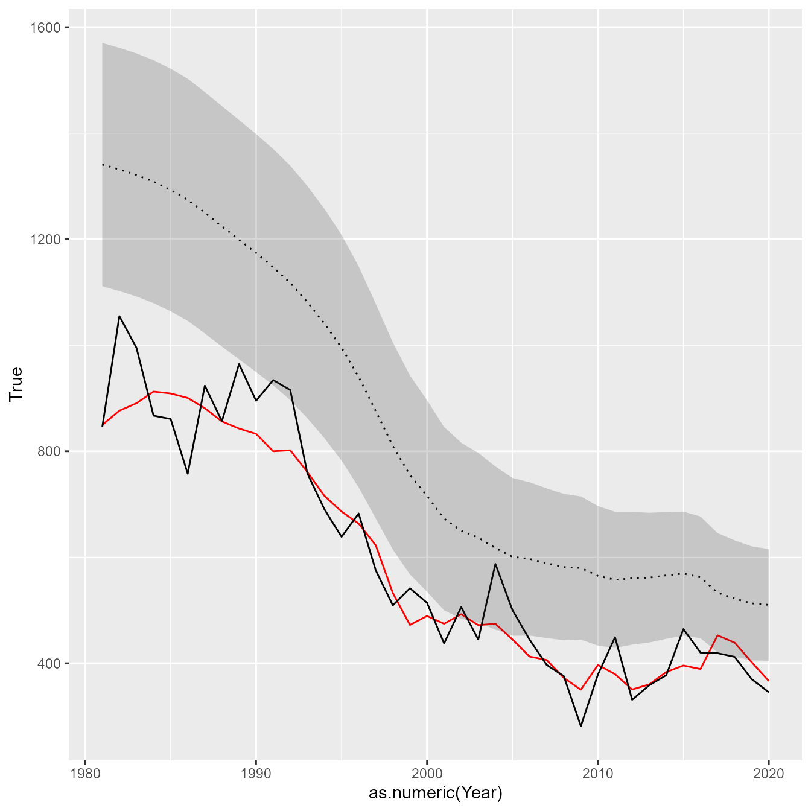
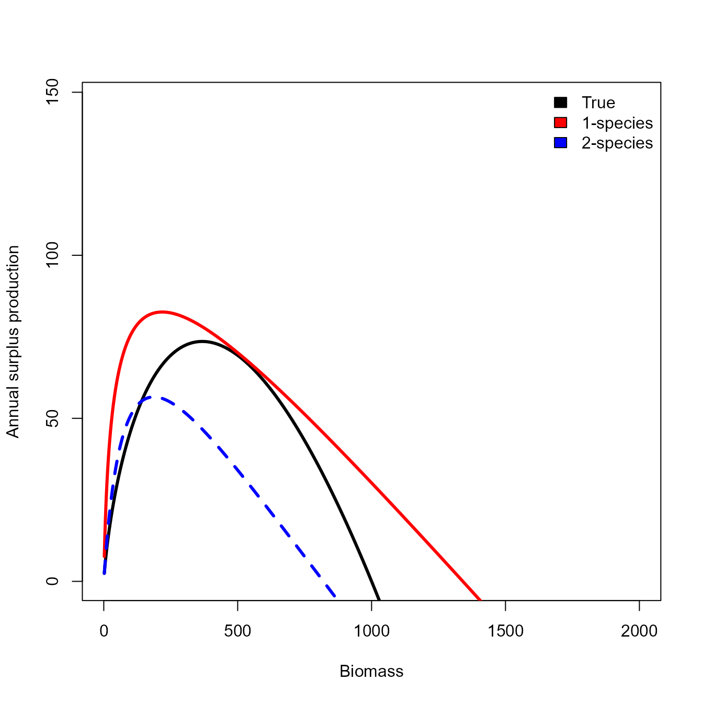
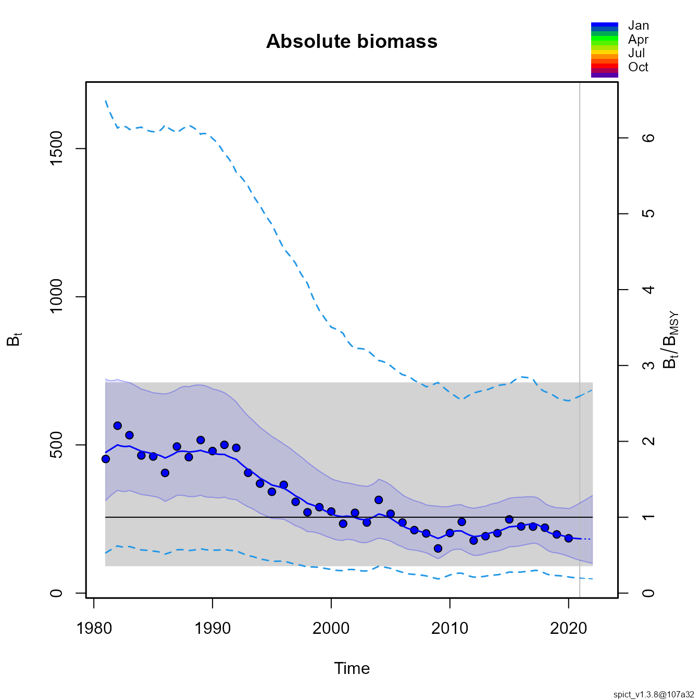
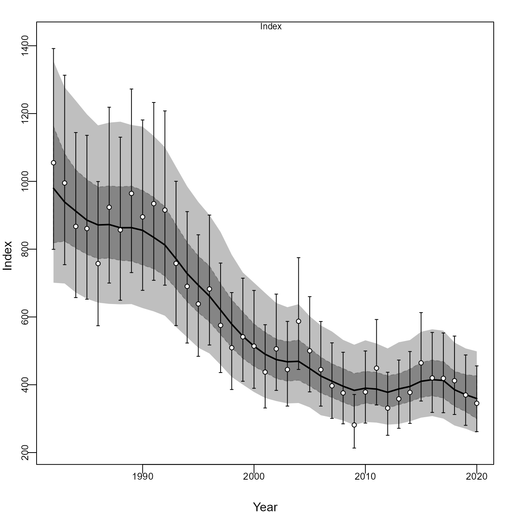

EcoState as surplus production model
James Thorson
Source:vignettes/surplus_production.Rmd
surplus_production.Rmdecostate is an R package for fitting the mass-balance
dynamics specified by EcoSim as a state-space model. It can be used as a
surplus production model by treating a single species as a
“producer”
Simulation demonstration
We first simulate new data. To do so, we simulate a Schaefer production model with Gompertz effort dynamics:
# Time-interval
years = 1981:2020
n_years = length(years)
# Biology
r = 0.2
#MSY = 100
K = 1000
sigmaB = 0.5
B0 = K * exp(sigmaB*rnorm(1))
prod_func = c("Schaefer", "Fox")[2]
# Effort dynamics
Bequil = 0.4 * K
Brate = 0.2
sigmaE = 0.1
E0 = 0.01
# Survey
q = 1
sigmaQ = 0.1
#
Pbar_t = P_t = C_t = E_t = B_t = rep(NA, n_years)
B_t[1] = B0
E_t[1] = E0
#
for( t in 2:n_years ){
if(prod_func=="Scaefer") Pbar_t[t] = B_t[t-1] + r * B_t[t-1] * (1 - B_t[t-1]/K)
if(prod_func=="Fox") Pbar_t[t] = r * B_t[t-1] * log(K / B_t[t-1])
P_t[t] = Pbar_t[t] * exp(sigmaB*rnorm(1))
B_t[t] = B_t[t-1] + P_t[t]
E_t[t] = E_t[t-1] * (B_t[t-1]/Bequil)^Brate * exp(sigmaE*rnorm(1))
C_t[t] = B_t[t] * (1 - exp(-E_t[t]))
B_t[t] = B_t[t] - C_t[t]
}
Bobs_t = q * B_t * exp(sigmaQ * rnorm(n_years))
#
matplot( x=years, y=cbind(B_t,Bobs_t,C_t), type="l", log="y", lty="solid")
We then set up inputs to EcoState
# Name taxa (optional, for illustration)
taxa = "target"
n_taxa = length(taxa)
# Ecopath-with-EcoSim parameters
# Diet matrix
DC_ij = array( 0, dim=c(1,1) )
PB_i = 0.1
QB_i = NA
EE_i = 1
B_i = 1
U_i = 0.2
type_i = "auto"
X_ij = array( 2, dim=c(1,1) )
# reformat to longform data-frame
Catch = na.omit(data.frame( "Mass" = C_t, "Year" = years, "Taxon" = taxa ))
Biomass = data.frame( "Mass" = Bobs_t, "Year" = years, "Taxon" = taxa )Next, we fit them with ecostate
# Settings: specify what parameters to estimate
fit_delta = taxa # process errors
fit_Q = taxa # catchability coefficient
fit_B0 = c() # non-equilibrium initial condition
fit_B = taxa # equilibrium biomass
# Treat it as an autotroph (given there's no prey to consume)
type = "auto"
# Label EwE inputs for each taxon as expected (so users can easily change taxa)
names(PB_i) = names(QB_i) = names(B_i) = names(EE_i) = names(type) = names(U_i) = taxa
dimnames(DC_ij) = dimnames(X_ij) = list("Prey"=taxa, "Predator"=taxa)
# Run model
out0 = ecostate( taxa = taxa,
years = years,
catch = Catch,
biomass = Biomass,
PB = PB_i,
QB = QB_i,
DC = DC_ij,
B = B_i,
EE = EE_i,
X = X_ij,
type = type,
U = U_i,
fit_B = fit_B,
fit_Q = fit_Q,
fit_eps = fit_delta,
fit_B0 = fit_B0,
control = ecostate_control( nlminb_loops = 0,
getsd = FALSE ) )
# Estimate logPB
pars = out0$tmb_inputs$p
map = out0$tmb_inputs$map
map$Xprime_ij = factor(1)
# Run model
out = ecostate( taxa = taxa,
years = years,
catch = Catch,
biomass = Biomass,
PB = PB_i,
QB = QB_i,
DC = DC_ij,
B = B_i,
EE = EE_i,
X = X_ij,
type = type,
U = U_i,
fit_B = fit_B,
fit_Q = fit_Q,
fit_eps = fit_delta,
fit_B0 = fit_B0,
control = ecostate_control( map = map,
tmb_par = pars ) )
#> Using `control$tmb_par`, so be cautious in constructing it
#> Using `control$map`, so be cautious in constructing it
# print output to terminal
out
#> Dynamics integrated using ABM with 10 time-steps
#> Run time: Time difference of 5.162322 secs
#> Negative log-likelihood: -80.04545
#>
#> EcoSim parameters:
#> type QB PB B EE U
#> target auto NA 0.1 1340.769 0 0.2
#>
#> EcoSim diet matrix:
#> Predator
#> Prey target
#> target 0
#>
#> EcoSim vulnerability matrix:
#> Predator
#> Prey target
#> target 1.059258
#>
#> Estimates: sdreport(.) result
#> Estimate Std. Error
#> logB_i 7.2009983 8.730774e-02
#> Xprime_ij -2.8258572 9.229292e-01
#> logtau_i -13.4706023 5.068437e+03
#> logq_i -0.3438141 1.086117e-01
#> Maximum gradient component: 0.0004253756Finally we can calculate a function that calculates the annualized surplus production
# Define function to calculate annualized production
prod_fun = function( biomass, Xprime, logPB, taxon, ecofit ){
p = ecofit$internal$parhat
n_taxa = length(ecofit$internal$taxa)
if(!missing(Xprime)) p$Xprime_ij[] = Xprime
if(!missing(logPB)) p$logPB_i[] = logPB
if(missing(taxon)) taxon = ecofit$internal$taxa[n_taxa]
p = add_equilibrium( p,
scale_solver = ecofit$internal$control$scale_solver,
noB_i = ifelse(is.na(p$logB_i),1,0),
type_i = type_i )
p$logF_i = rep(log(0), n_taxa)
p$epsilon_i = rep(0, n_taxa)
data2 = local({
type_i = type_i
n_species = n_taxa
F_type = ecofit$internal$control$F_type
environment()
})
environment(dBdt) <- data2
State = c( ecofit$rep$out_initial$B_i, rep(0,n_taxa) )
State[match(taxon,ecofit$internal$taxa)] = biomass
#dBdt(Time=0, State=State, Pars=p)
proj = abm3pc_sys(
f = dBdt,
a = 0,
b = 1,
n = ecofit$internal$control$n_steps,
Pars = p,
y0 = State )
biomass1 = rev( proj$y[,match(taxon,ecofit$internal$taxa)] )[1]
return( biomass1 - biomass )
}We then use that function to compare the exact and an approximation that uses a first-order Euler approximation:
# Calculate predicted and true curves
x = seq(0, 2*K, length=1000)[-1]
if(prod_func=="Scaefer") y = r * x * (1 - x/K)
if(prod_func=="Fox") y = r * x * log(K/x)
yhat = sapply( x, FUN=prod_fun, ecofit=out,
Xprime = out$internal$parhat$Xprime_ij,
logPB = out$internal$parhat$logPB_i )
# Solve for Bmsy / B0 in production function
dBdt_approx = function(b, x, p){
# dBdt for single autotroph (not annualized)
dBdt_expr = expression(b * p * (1-b) / (x - 1 + b))
# Solve for d/db dBdt = 0 as min_b((d/db dBdt)^2)
#eval( D(dBdt,"b") )^2
# OR: -dBdt
eval(dBdt_expr)
}
phi1 = optimize( dBdt_approx, lower=0.01, upper=0.99, maximum=TRUE,
x = 1+exp(out$internal$parhat[['Xprime_ij']]),
p = exp(out$internal$parhat[['logPB_i']]) )$maximum
# Empirical
phi2 = x[which.max(yhat)] / 1000
#
msy1 = exp(out$internal$parhat$logB_i) * dBdt_approx(phi1,
x = 1+exp(out$internal$parhat[['Xprime_ij']]),
p = exp(out$internal$parhat[['logPB_i']]) )
#
msy2 = yhat[which.max(yhat)]
#
true_msy = y[which.max(y)]
# Plot them
plot( x=x, y=y, type="l", xlim=c(0,2*K), ylim=c(0,2*max(y)), lwd=3,
xlab="Biomass", ylab="Annual surplus production" )
lines( x=x, y=yhat, lwd=3, col="red" ) # *exp(out$internal$parhat$logq_i)
And we can also plot the estimated and true biomass
# Extract estimated biomass
Bhat_t = as.list(out$sdrep, what="Estimate", report=TRUE )$B_ti
Bse_t = as.list(out$sdrep, what="Std. Error", report=TRUE )$B_ti
# Reformat to long-form data frame for ggplot
results = cbind( "Year" = years,
"True" = as.vector(B_t),
"Obs" = as.vector(Bobs_t),
"Est" = as.vector(Bhat_t),
"SE" = as.vector(Bse_t) )
# Plot using ggplot
library(ggplot2)
ggplot(results) +
geom_line( aes(x=as.numeric(Year), y=True), colour="red" ) +
geom_line( aes(x=as.numeric(Year), y=Obs) ) +
geom_line( aes(x=as.numeric(Year), y=Est), linetype="dotted" ) +
geom_ribbon( aes(x=as.numeric(Year), ymin=Est-1.96*SE, ymax=Est+1.96*SE), alpha=0.2) 
Bivariate production model
Similarly, we could fit a two-species production model to these same data:
# Inputs
taxa = c( "prey", "target" )
n_taxa = length(taxa)
PB_i = c( 5, 0.1 )
QB_i = c( NA, 0.5 )
DC_ij = matrix( c(0,0,1,0), nrow=2 )
X_ij = matrix( 2, nrow=2, ncol=2 )
U_i = c( 0.2, 0.2 )
type = c( "auto", "hetero" )
EE_i = c( 1, NA )
B_i = c( NA, 1 )
# Settings: specify what parameters to estimate
fit_delta = "target" # process errors
fit_Q = "target" # catchability coefficient
fit_B0 = c() # non-equilibrium initial condition
fit_B = "target" # equilibrium biomass
# Label EwE inputs for each taxon as expected (so users can easily change taxa)
names(PB_i) = names(QB_i) = names(B_i) = names(EE_i) = names(type) = names(U_i) = taxa
dimnames(DC_ij) = dimnames(X_ij) = list("Prey"=taxa, "Predator"=taxa)
# Run model
out0 = ecostate( taxa = taxa,
years = years,
catch = Catch,
biomass = Biomass,
PB = PB_i,
QB = QB_i,
DC = DC_ij,
B = B_i,
EE = EE_i,
X = X_ij,
type = type,
U = U_i,
fit_B = fit_B,
fit_Q = fit_Q,
fit_eps = fit_delta,
fit_B0 = fit_B0,
control = ecostate_control( nlminb_loops = 0,
getsd = FALSE ) )
# Estimate logPB
pars = out0$tmb_inputs$p
map = out0$tmb_inputs$map
#map$Xprime_ij = factor( rep(1,n_taxa) %o% ifelse(type=="auto",NA,1) )
# Run model
out_bivar = ecostate( taxa = taxa,
years = years,
catch = Catch,
biomass = Biomass,
PB = PB_i,
QB = QB_i,
DC = DC_ij,
B = B_i,
EE = EE_i,
X = X_ij,
type = type,
U = U_i,
fit_B = fit_B,
fit_Q = fit_Q,
fit_eps = fit_delta,
fit_B0 = fit_B0,
control = ecostate_control( map = map,
tmb_par = pars ) )
#> Using `control$tmb_par`, so be cautious in constructing it
#> Using `control$map`, so be cautious in constructing itWe can then calculate and visualize how this changes the production function:
# Calculate annualized production function
yhat_bivar = sapply( x, FUN=prod_fun, ecofit=out_bivar, taxon="target",
Xprime = out_bivar$internal$parhat$Xprime_ij,
logPB = out_bivar$internal$parhat$logPB_i )
# Empirical
phi_bivar = x[which.max(yhat_bivar)] / 1000
msy_bivar = yhat_bivar[which.max(yhat_bivar)]
# Plot them
plot( x=x, y=y, type="l", xlim=c(0,2*K), ylim=c(0,2*max(y)), lwd=3,
xlab="Biomass", ylab="Annual surplus production" )
matplot( x=x, y=cbind(yhat,yhat_bivar), lwd=3, col=c("red","blue"),
type="l", add=TRUE )
legend( "topright", fill=c("black","red","blue"),
legend=c("True","1-species","2-species"), bty="n")
Comparison with other models
We can compare this with a state-space production model in continuous time (SPiCT):
library(spict)
#> Loading required package: TMB
#> Welcome to spict_v1.3.8@107a32
# Format for SPiCT
datalist = list(
obsC = C_t[-1],
timeC = years[-1],
obsI = Bobs_t,
timeI = years
)
# Fit and plot
res <- fit.spict(datalist)
plotspict.biomass(res)
Similarly, we can compare it with Just Another Bayesian Biomass Assessment (JABBA):
library(JABBA)
# Compile JABBA JAGS model and input object
jbinput = build_jabba( catch = data.frame(Year=years, Total=C_t)[-1,],
cpue = data.frame(Year=years, Index=Bobs_t)[-1,],
se = data.frame(Year=years, Index=0.1)[-1,],
assessment = "target",
scenario = "TestRun",
model.type = "Schaefer",
sigma.est = FALSE,
fixed.obsE = 0.1 )
#>
#> ><> Prepare JABBA input data <><
#>
#> ><> Assume Catch with error CV = 0.1 <><
#>
#> ><> Model type:Schaefer <><
#>
#> ><> Shape m =2
#>
#> ><> K prior mean =888.164844109276and CV =1(log.sd = 0.832554611157698)
#>
#> ><> r prior mean =0.2and CV =0.532940350027788(log.sd = 0.5)
#>
#> ><> Psi (B1/K) prior mean =0.9and CV =0.25withlnormdestribution
#>
#>
#>
#> ><> ALWAYS ENSURE to adjust default settings to your specific stock <><
# Fit JABBA (here mostly default value - careful)
bet1 = fit_jabba(jbinput, quickmcmc=TRUE)
#> module glm loaded
#> Compiling model graph
#> Resolving undeclared variables
#> Allocating nodes
#> Graph information:
#> Observed stochastic nodes: 120
#> Unobserved stochastic nodes: 124
#> Total graph size: 2169
#>
#> Initializing model
#>
#> ><> Produce results output of Schaefer model for target TestRun <><
#>
#>
#> ><> Scenario TestRun_Schaefer completed in 0 min and 29 sec <><
# Make individual plots
jbplot_cpuefits(bet1)
#>
#> ><> jbplot_cpue() - fits to CPUE <><
Comparing the two shows that SPICT and EcoState both have errors in estimating population scale, presumably due to mis-specifying the production function:
# Compare estimates
knitr::kable(rbind(
"True" = c("q" = q, "K"=K, "MSY"=true_msy),
"EcoState 1-species" = c(exp(out$opt$par[c('logq_i','logB_i')]),msy2),
"EcoState 2-species" = c(exp(out_bivar$opt$par[c('logq_i','logB_i')]),msy_bivar),
"SPiCT" = c(res$value[c('q','K','MSY')]),
"JABBA" = c(bet1$pars[c('q','K'),'Median'],bet1$estimates['MSY','mu'])
), digits=3)| q | K | MSY | |
|---|---|---|---|
| True | 1.000 | 1000.000 | 73.576 |
| EcoState 1-species | 0.709 | 1340.769 | 82.607 |
| EcoState 2-species | 1.124 | 820.067 | 56.553 |
| SPiCT | 1.868 | 508.147 | 76.990 |
| JABBA | 0.757 | 1161.058 | 69.269 |